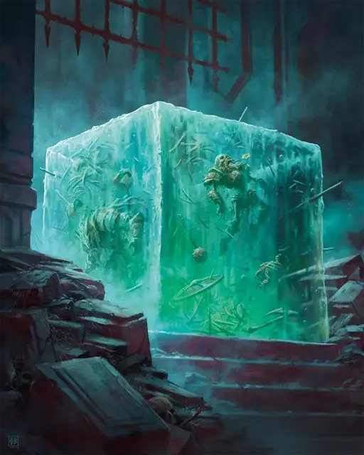

Студенистый куб
Gelatinous Cube
Большая Слизь, без мировоззрения

Класс Защиты 6 Инициатива −4 (6)
Хиты 63 (6к10 + 30)
Скорость 15 футов
| мод | спас | ||
|---|---|---|---|
| СИЛ | 14 | +2 | +2 |
| ЛОВ | 3 | −4 | −4 |
| ТЕЛ | 20 | +5 | +5 |
| мод | спас | ||
|---|---|---|---|
| ИНТ | 1 | −5 | −5 |
| МДР | 6 | −2 | −2 |
| ХАР | 1 | −5 | −5 |
Иммунитеты Кислота; Испуганный, Истощение, Оглохший, Опрокинутый, Ослеплённый, Очарованный
Чувства пассивное Восприятие 8, Слепое зрение 60 футов
Языки нет
Опасность 2 (450 опыта; БВ +2)
Особенности
Куб слизи. Куб прозрачен и занимает всё своё пространство. Другие существа могут входить в его пространство, но сделав это, существо подвергается Поглощению куба, и спасбросок против него совершает с Помехой.
Существа внутри куба имеют Полное укрытие; внутри куба может одновременно удерживаться одно существо Большого размера или до четырёх существ Среднего или Маленького размера.
Существо в пределах 5 футов от куба может действием попытаться вытянуть из куба существо или объект; оно получает 10 (3к6) урона Кислотой, и если преуспевает в проверке Силы (Атлетика) Сл 12, то вытягивает это существо или объект.
Прозрачность. Даже если куб находится рядом, существо должно преуспеть в проверке Мудрости (Восприятие) Сл 15, чтобы заметить куб, если оно не видело, как куб перемещается или иным способом двигается.
Действия
Ложноножка. Бросок рукопашной атаки: +4, досягаемость 5 фт. Попадание: 12 (3к6 + 2) урона Кислотой.
Поглощение. Куб перемещается на расстояние вплоть до своей Скорости, не вызывая Провоцированных атак. Куб может перемещаться через пространство существ Большого размера или меньше, если может удерживать их внутри (см. особенность Куб слизи). Спасбросок Ловкости: Сл 12, каждое существо, в чьё пространство куб входит в первый раз за это перемещение. Провал: 10 (3к6) урона Кислотой, и цель поглощена. Поглощённая цель получает состояние Опутанный, задыхается, не может сотворять заклинания с Вербальным компонентом, и получает 10 (3к6) урона Кислотой в начале каждого хода куба. Когда куб перемещается, поглощённые цели перемещаются с ним. Поглощённая цель может попытаться вырваться, действием совершая проверку Силы (Атлетика) Сл 12; при успехе она высвобождается и перемещается в ближайшее незанятое пространство. Успех: Половина урона, и цель перемещается в незанятое пространство в пределах 5 футов от куба. Если такого пространства нет, этот спасбросок считается проваленным.
Бонус мастерства +2
Среда обитания Подземье
Сокровища Любые
Студенистый куб
Очищающая подземелье масса слизи
Студенистые кубы — дрожащие массы едкой слизи, которые перемещаются по узким пещерам и подземельям, поглощая всё на своём пути. Природа сделала эти Слизи прозрачными, поэтому их трудно увидеть, пока они неподвижны. Поглощённые этой слизью существа и объекты постепенно растворяются. Иногда внутри студенистого куба можно обнаружить плавающие остатки его прошлых трапез. Совершите бросок по таблице «Мусор в студенистом кубе» для вдохновения или выберите сами содержимое куба.
Мусор в студенистом кубе
| 1к6 | Внутри желатинового куба плавает... |
| 1 | Сундук или недавно пойманный мимик. |
| 2 | Скопление пузырьков газа или камней, напоминающих глаза. |
| 3 | Ключ от ближайшей двери или ларца. |
| 4 | Примечательное оружие, нуждающееся в ремонте. |
| 5 | Скелет известного искателя приключений. |
| 6 | Табличка с таинственным посланием. |